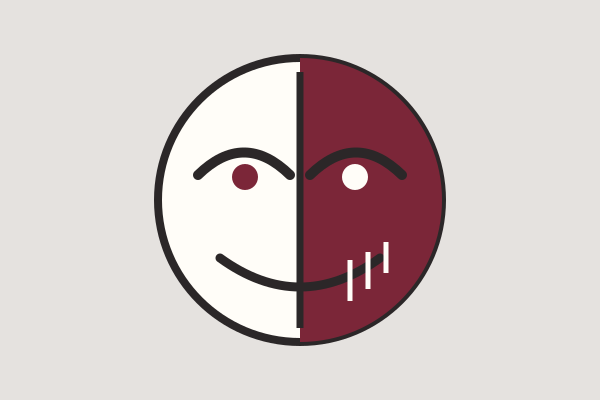

Таблица с фоновым изображением
Сравнение произведений
Таблица помогает увидеть общие вопросы и разные способы их постановки.
Темы и конфликты
| Произведение | Образ | Главный вопрос | Философская тема | Страница |
|---|---|---|---|---|
| Тетрадь смерти |  | Можно ли достичь справедливости единоличным наказанием? | Этика долга и последствий | Читать разбор |
| Токийский гуль |  | Что сохраняет личность после изменения тела и роли? | Идентичность и Другой | Читать разбор |
| Монстр |  | Где заканчивается ответственность за спасённую жизнь? | Профессиональный долг | Читать заметку |
Краткие выводы
- Сила без процедуры делает личное убеждение опасным.
- Идентичность формируется не только происхождением, но и поступками.
- Последствия выбора не всегда отменяют нравственную ценность исходного принципа.
Внешние материалы
Для уточнения терминов можно открыть статью о консеквенциализме и статью о личной идентичности. Обе ссылки открываются в новой вкладке.
↑ К началу страницы